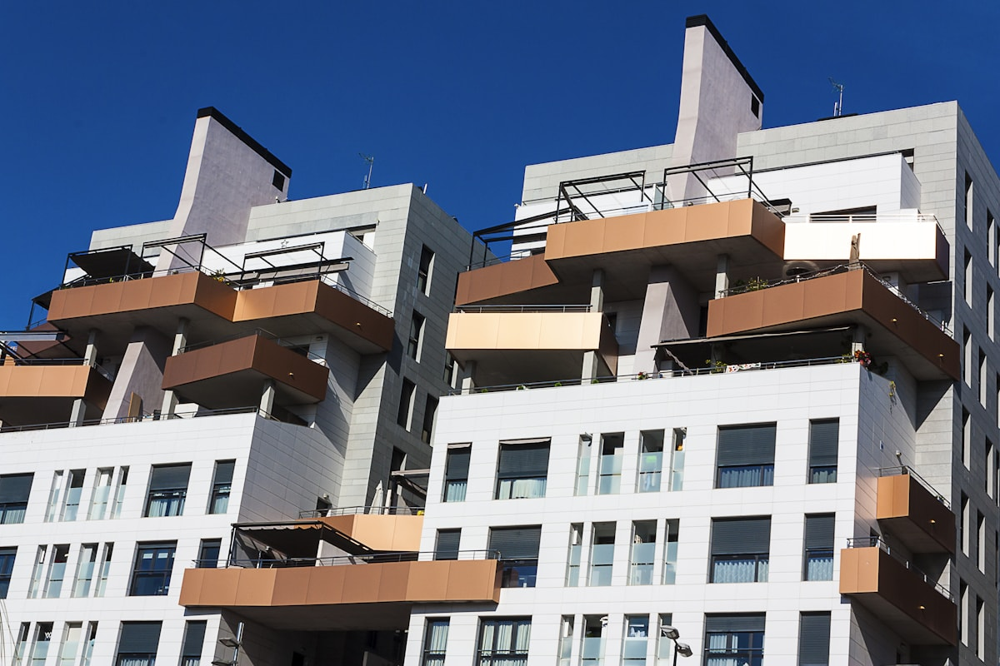

Fassadenanstrich · Hamburg · seit 2002
Fassade gestrichen. Zum Festpreis.
Putzfassaden, Klinker, Holz — Mehmet Sert besichtigt persönlich, klärt Vorschäden und macht ein schriftliches Angebot. Kein Stundensatz, keine Überraschungen.
Erfahrung
Seit 2002
Familienbetrieb in Hamburg — über 20 Jahre vor Ort.
Persönlich
Direkt mit Mehmet Sert
Jeder Auftrag wird persönlich besichtigt und kalkuliert.
Was wir machen
Außenanstrich von der Vorbereitung bis zur Fertigstellung.
Fassadenanstrich ist mehr als Farbe auftragen: Vorschäden erkennen, Untergrund vorbereiten, richtige Produkte wählen. Wir übernehmen alles aus einer Hand — inklusive Putzreparaturen und Gerüstkoordination. Für Innenarbeiten danach: Malerarbeiten Hamburg.
Putzfassade
- Rissverschluss und Putzreparaturen
- Grundierung und Haftbrücke
- Silikonharz- und Dispersionsfassadenfarben
- Wärmedämmverbundsystem (WDVS) Neuanstrich
Klinkerfassade
- Klinkeranstrich und Lasur
- Fugenreinigung und -sanierung
- Hydrophobierung gegen Feuchtigkeit
- Farblich abstimmbare Klinkerfarben
Holzfassade & Außenholz
- Holzverkleidungen ölen und lasieren
- Fensterrahmen und Türen streichen
- Holzschutzgrundierung auftragen
- Schäden und Fäulnis ausbessern
Nebengebäude & Sonstiges
- Garage, Carport und Schuppen
- Balkon- und Terrassengeländer
- Dachgesims, Ortgang und Regenrinnen
- Kellersockel und Einfahrtswände
Wichtig zu wissen
Vorbereitung entscheidet über die Haltbarkeit.
Untergrundvorbereitung
- Hohlstellen abklopfen und auffüllen
- Alten losen Anstrich abwaschen oder abschleifen
- Risssanierung mit elastischer Fassadenmasse
- Saugregulierende Grundierung aufbringen
Materialauswahl
- Silikonharzfarbe: langlebig, diffusionsoffen
- Mineralfarbe: ideal für Altbauten
- Dispersionsfarbe: preisgünstig, bewährt
- Alle Farben nach RAL oder NCS auf Wunsch
Ablauf
Vom Anruf bis zur sauberen Fassade.
-
Kurz melden
Anrufen oder per WhatsApp schreiben — Mehmet Sert meldet sich innerhalb eines Werktags.
-
Kostenloser Vor-Ort-Termin
Persönliche Besichtigung: Fassadenzustand, Maße, Vorschäden, Materialwahl und Gerüstbedarf.
-
Schriftliches Festpreisangebot
Transparente Kalkulation, alle Leistungen aufgeführt — Zustimmung → Termin → Fertigstellung.
FAQ
Häufige Fragen zum Fassadenanstrich in Hamburg.
Was kostet ein Fassadenanstrich in Hamburg?
Der Preis hängt von Fassadenfläche, Untergrundszustand, notwendigen Putzreparaturen und dem gewählten Farbsystem ab. Maler Sert kommt kostenlos zur Besichtigung und erstellt ein schriftliches Festpreisangebot — ohne versteckte Kosten.
Wann ist die beste Jahreszeit für einen Fassadenanstrich in Hamburg?
Fassadenanstriche sollten bei 5–30 °C und trockener Witterung ausgeführt werden. In Hamburg empfehlen wir Frühjahr (April–Mai) oder Spätsommer (August–September) — außerhalb der Hauptregenzeit und vor dem ersten Frost.
Wie lange hält ein Fassadenanstrich?
Ein fachgerecht ausgeführter Fassadenanstrich mit hochwertigen Produkten (z. B. Caparol Amphibolin oder Alpina Wetterschutzfarbe) hält 8–15 Jahre. Entscheidend sind Untergrundvorbereitung, Anzahl der Anstriche und die Witterungsbelastung der Fassade.
Kümmern Sie sich auch um das Gerüst?
Ja, wir koordinieren Gerüstbau und Anstrich als Gesamtpaket. Die Gerüstkosten sind transparent im schriftlichen Angebot ausgewiesen — kein zusätzlicher Aufwand für Sie.
Führen Sie vor dem Anstrich auch Putzreparaturen durch?
Ja, Putzreparaturen, Rissverschluss und Grundierung gehören zu unserem Standard. Ein Anstrich auf beschädigtem Untergrund hält nicht — deshalb bereiten wir jede Fläche sorgfältig vor, bevor die erste Farbe aufgeht.
Kostenlos anfragen
Vor-Ort-Termin vereinbaren.
Wir schauen uns die Fassade an und machen ein schriftliches Festpreisangebot — ohne Druck, ohne Stundensatz.